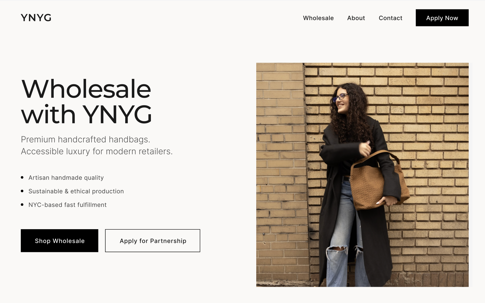

B2B COMMERCE · INTERNAL TOOLS · COMPLEX WORKFLOWS
Evolving the Wholesale Experience for YNYG
PROBLEM
YNYG needed a clearer path to attract and convert retail partners.
SOLUTION
A wholesale platform for retailer acquisition, Faire purchasing, and co-branding, with later explorations into direct ordering and operations.
IMPACT
Secured 5+ retail partnerships and increased wholesale orders by 21%.

Project Scope & NDA
The launched experience helped prospective retailers learn about YNYG's wholesale offering and continue purchasing through Faire. Beyond the initial scope, I explored how YNYG could support direct wholesale ordering, inventory management, and production coordination through a more connected first-party workflow.
Some product details and internal workflows are omitted due to NDA. I'm happy to discuss the process and design decisions in more detail.